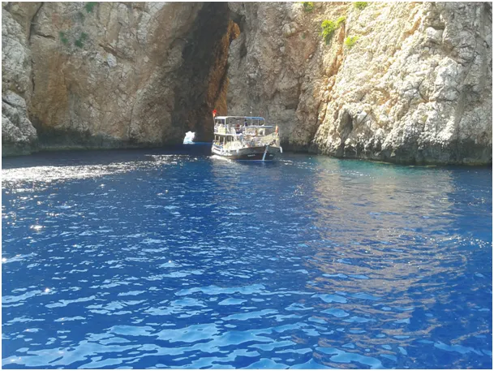
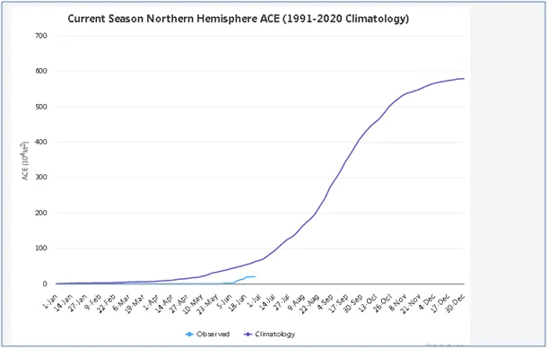
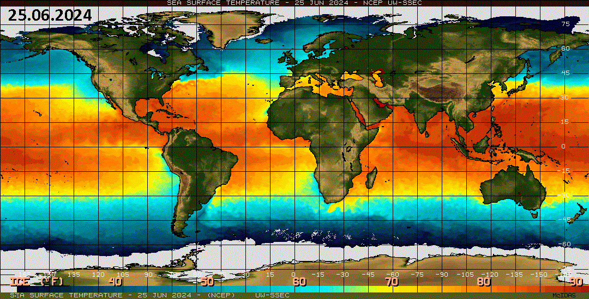

Będzie lato jak zawsze, tylko krótsze.
Z powodu chłodniejszego co roku Atlantyku, zachmurzenie na południu Europy od wiosny jest małe i Morze Śródziemne nagrzewa się bardziej. Jednak morza północne takie jak Bałtyk i Zatoka Hudsona są znacznie zimniejsze na początku lata. Potężne obszary tej ostatniej są ciągle pod lodem i to w części południowej, w głębi kontynentu, gdzie kilka dni temu spadły niespotykane opady śniegu. Atlantyckie wybrzeże Kanady też jest pod lodem. Wyraźnie chłodniejsze są Morze Czarne i Kaspijskie wychłodzone wiosną zimnymi wiatrami z północy. Chłodne oceany na półkoli północnej generują zaledwie 30% cyklonów, a w tym tylko 10% huraganów na Atlantyku, w stosunku do normy wieloletniej. Tu sezon dopiero się zaczyna, będziemy obserwować.

Znacznie chłodniejsze niż rok wcześniej są oceany na zachód od Afryki południowej i Ameryki Południowej. Zimne prądy coraz dalej docierają w kierunku zwrotnika, co było powodem obfitych opadów śniegu klika tygodni temu w Republice Południowej Afryki i to w dolinach, a nie tylko na szczytach gór.

Z powodu roku przestępnego 177. dzień roku ma inną datę niż rok wcześniej, co widać na animowanej mapce.
Paweł Klimczewski